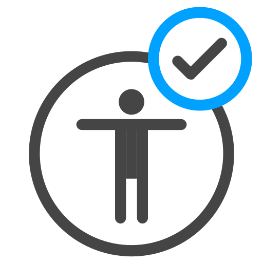
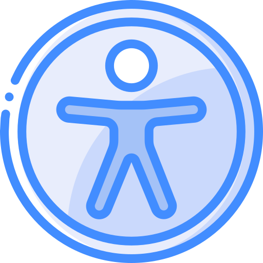

¿Qué es Accesibilidad Web?
La accesibilidad web significa que las páginas y productos digitales están diseñados para que personas con discapacidades o con dificultades para leer puedan usarlos fácilmente. es asegurar que todos los usuarios, sin importar sus capacidades , puedan acceder a plataformas, sitios web, aplicaciones o productos digitales de manera igualitaria, inclusiva y autónoma.
Importancia de la Accesibilidad Web
La accesibilidad web es muy importante porque permite que personas con discapacidades o con dificultades para usar la tecnología puedan acceder al mundo digital. Al hacer que los sitios web sean más fáciles de usar para todos, promovemos la inclusión y la igualdad. Además, al mejorar la accesibilidad, beneficiamos a una gran cantidad de personas, haciendo que internet sea un lugar mejor para todos.
- Mejora la experiencia de usuario al hacer que la navegación en línea sea más fácil y accesible para todos, independientemente de sus habilidades o discapacidades.
- Aumenta la equidad digital al garantizar que todas las personas, incluidas aquellas con discapacidades, tengan igualdad de acceso a la información y servicios en línea.
- Fortalece la reputación de la marca al demostrar un compromiso con la accesibilidad y la inclusión, lo que puede generar confianza y lealtad entre los usuarios.
- Cumple con las normativas y regulaciones de accesibilidad web, lo que reduce el riesgo de posibles demandas legales y protege la reputación de la empresa.
Principios de Accesibilidad Web
La accesibilidad web tiene como objetivo hacer que cualquier página y su contenido sean fáciles de usar y entender para todos los visitantes. Sus mejoras van más allá de una experiencia de usuario típica. Aquí se destacan los principios básicos de la accesibilidad web:
-
Perceptible

El contenido y la interfaz deben ser visibles y claros para todos
-
Operable

Los usuarios deben poder interactuar fácilmente con el sitio
-
Comprensible
La información y la interfaz deben ser fáciles de entender
-
Robusto
El contenido debe funcionar bien con la mayoría de los navegadores
| Principios | Ejemplos |
|---|---|
| Perceptible | Una tienda en línea tiene imágenes de productos. Cada imagen tiene una etiqueta de texto alternativa que describe el producto, como "Zapatos de cuero negros. |
| Operabilidad | Un blog permite la navegación mediante el teclado. Los usuarios pueden usar la tecla "Tab" para moverse entre enlaces y botones, y "Enter" para activarlos. |
| Comprensión | Un formulario de registro pide el número de teléfono. Junto al campo de entrada, hay un ejemplo claro: "Ingrese su número en el formato: 123-456-7890 |
| Robustez | . Todos los encabezados, enlaces y botones están etiquetados correctamente para que el lector de pantalla pueda interpretarlos y anunciarlos adecuadamente. |